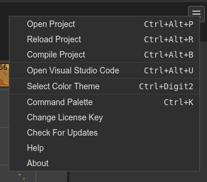

Main menu
The Main menu lists common general commands. You can open it by pressing in the menu button at the right of the Main toolbar:
Open Project: launches the Open Project dialog.
Reload Project: reloads the project files.
Compile Project: compiles all compilable files of the project. For example, the scene and component files. This does not include TypeScript files or any other format with external compilers.
Open Visual Studio Code: opens the project in a local Visual Studio Code instance. This is available only if the Phaser Editor 2D server is running in desktop mode. You can configure a different external editor. Check the -external-editor-command server option.
Select Color Theme: opens the Color Themes dialog.
Command Palette: opens the Command Palette
Unlock Phaser Editor 2D: opens a dialog to unlock the IDE.
Check For Updates: checks if there is a new version.
Help: opens this documentation in the browser.
About: opens the About dialog.